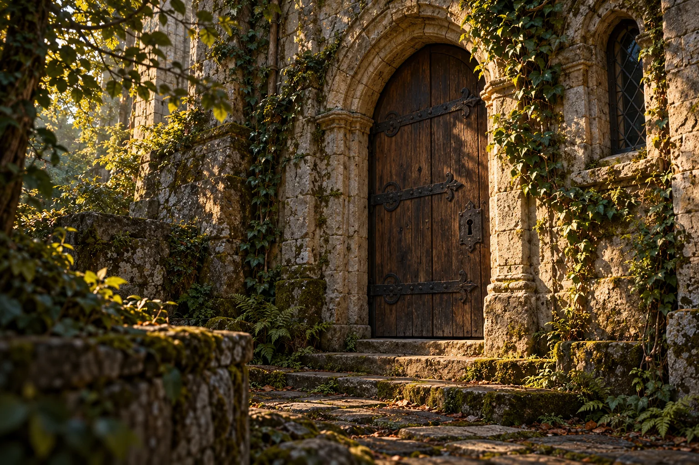
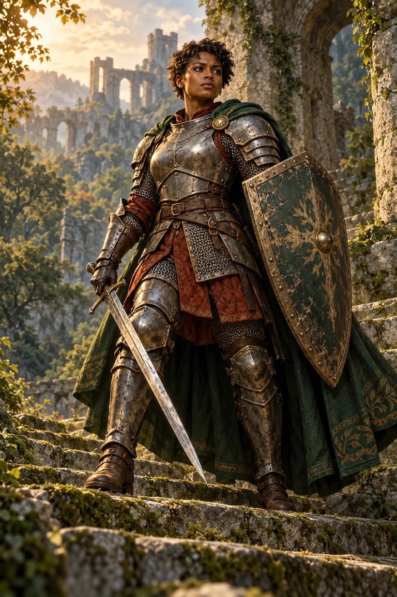
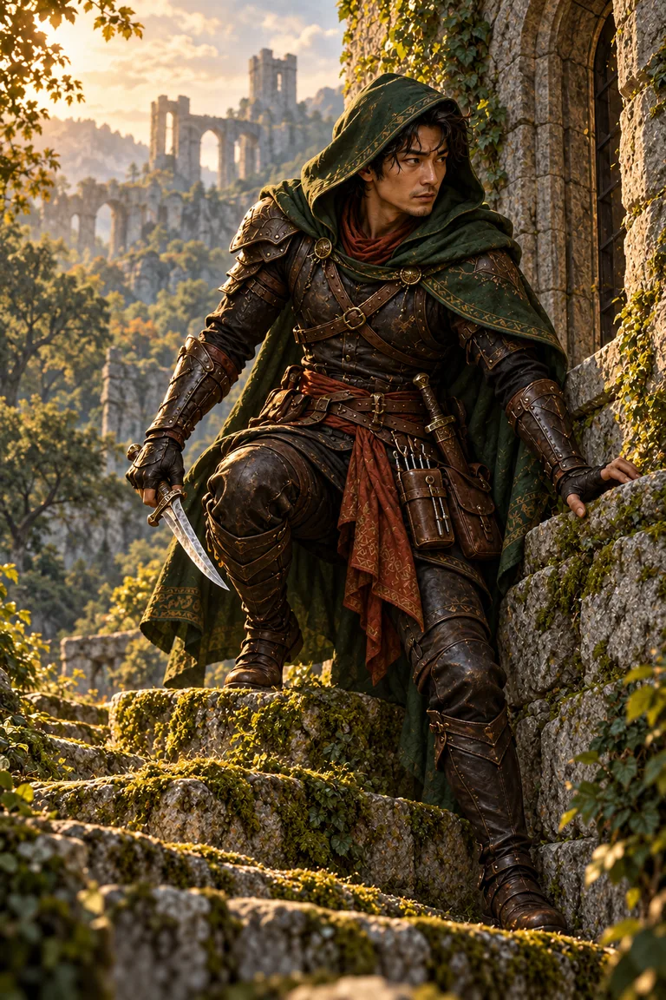
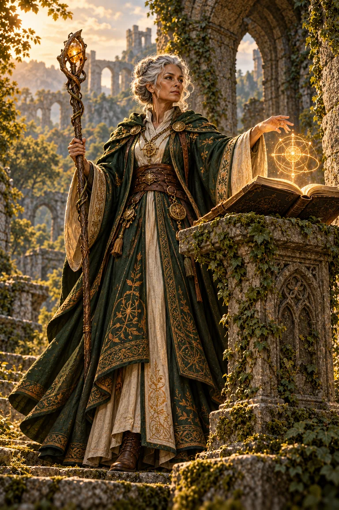

Exploration
Find what others missed.
Search the castle wall for a hidden passage, follow clues, or solve a puzzle.
Start here / The beginner's journey
Five chapters to understand D&D, imagine your choices, and get ready for your first session.
A little curiosity is all you need to start. Take it one topic at a time.
Imagine your first moment
A light flickers in the old watchtower. Your friends turn to you.
What do you try?
D&D begins with a conversation. Your choices give it a direction.
Understand the experience
D&D stands for Dungeons & Dragons. It's a cooperative tabletop roleplaying game. You and the other players create fantasy characters and decide what they do in an imaginary world.
One person, called the Dungeon Master (DM), describes and runs that world. Your decisions shape the adventure, while rules and dice help resolve uncertain outcomes. The point is to enjoy a shared story together, rather than defeat the other players.
The Dungeon Master
Plays the people you meet and helps resolve what happens next.
“A stranger waves you over.”
The players
Describe your character's actions and build on each other's ideas.
“Let's hear what they have to say.”
From an idea to an adventure
A session is one meeting to play. It usually follows this pattern:
The Dungeon Master describes the situation.
The players decide what their characters attempt.
The Dungeon Master explains what happens, using rules or dice when needed.
A new situation gives you another choice. The story keeps moving.

Encounter 01At the threshold
The Dungeon Master sets the scene
Your group reaches an old castle. The heavy door is locked, and a narrow window overlooks the steps. What do you do?
A knock might bring someone to the door. A search could reveal a clue. Your party can discuss a plan, too. The DM describes what happens next, using rules or dice when needed. You can suggest other actions as well.
Your move
A possible DM response
Choose an approach above to see one way the Dungeon Master might continue the scene.
What this teachesYour character's idea gives the DM something to respond to.
You can suggest other actions, too. These are example outcomes; your DM and the situation may lead somewhere different. Try another approach here to compare.
One castle / Many kinds of adventure
An adventure is the story or situation your group is playing through. These three kinds of activity often overlap:
Find what others missed.
Search the castle wall for a hidden passage, follow clues, or solve a puzzle.
Make a connection.
Talk to the guard behind the door. Ask questions, negotiate, or try to earn their trust.
Face danger together.
If monsters attack in the courtyard, characters take turns, using abilities and dice to resolve their actions.
An adventure can last one session or continue over several. A longer series of connected adventures with the same group of characters is called a campaign.
Someone to imagine
You bring the personality.
Your class brings some tools.
Your character is the person you play, with their own personality, goals, and abilities. A class gives them a set of abilities and ways to approach an adventure.
Here are three examples. Notice what you'd enjoy trying; many other classes exist.

Hold the line
Step into the thick of the action. Fighters use weapons, armor, and practiced combat skills to protect the group and meet danger head-on.
At the castle“I raise my shield and hold the doorway while you get through.”

Find a clever way through
Find the opening others miss. Rogues combine stealth, skills, and precise attacks with an eye for clever solutions.
At the castle“I slip past the guard and take a closer look at that lock.”

Make the impossible possible
Turn knowledge into possibility. Wizards learn and cast spells, finding inventive magical answers to the problems the group faces.
At the castle“I use a spell to investigate the strange glow beyond the doorway.”
Your class gives you abilities. You decide who your character is. These illustrations show recognizable archetypes; your character can have their own appearance, personality, and goals.
A little uncertainty
Players roll dice when an action could succeed or fail and the outcome matters. The roll helps the group find out what happens, such as whether your character spots a hidden entrance.
A D20 is a die with twenty sides. You often add a number from your character sheet to the roll. This adjustment is called a modifier and can be a bonus or a penalty.
Suppose the DM sets a target number of 15 to find a hidden entrance:
An ability check / Back at the castle
Can you spot a hidden entrance in the castle wall?
You find the entrance.
The total meets the target.
Meeting or beating the target succeeds, so you find the entrance. A lower total would fail. Not every action needs a roll; the DM uses the rules to decide when dice are needed.
Your next step is a real one
Bring your curiosity.
Learn the rest together.
You don't need to memorize the rules, act in character voices, or own expensive equipment. You can learn as you play.
Pack light / A first-session checklist
Your next move
Ask the person running the game what to bring and how long the session will last.
Explore the adventure hubA personal learning project
I chose D&D for this project because I like games where your decisions can lead to different outcomes, and I find the way it combines rules and creativity interesting.
QA interests me for a similar reason. I enjoy understanding how things work and figuring out why something doesn't work the way it should. I think being curious, patient, and paying attention to details are useful qualities in this field.